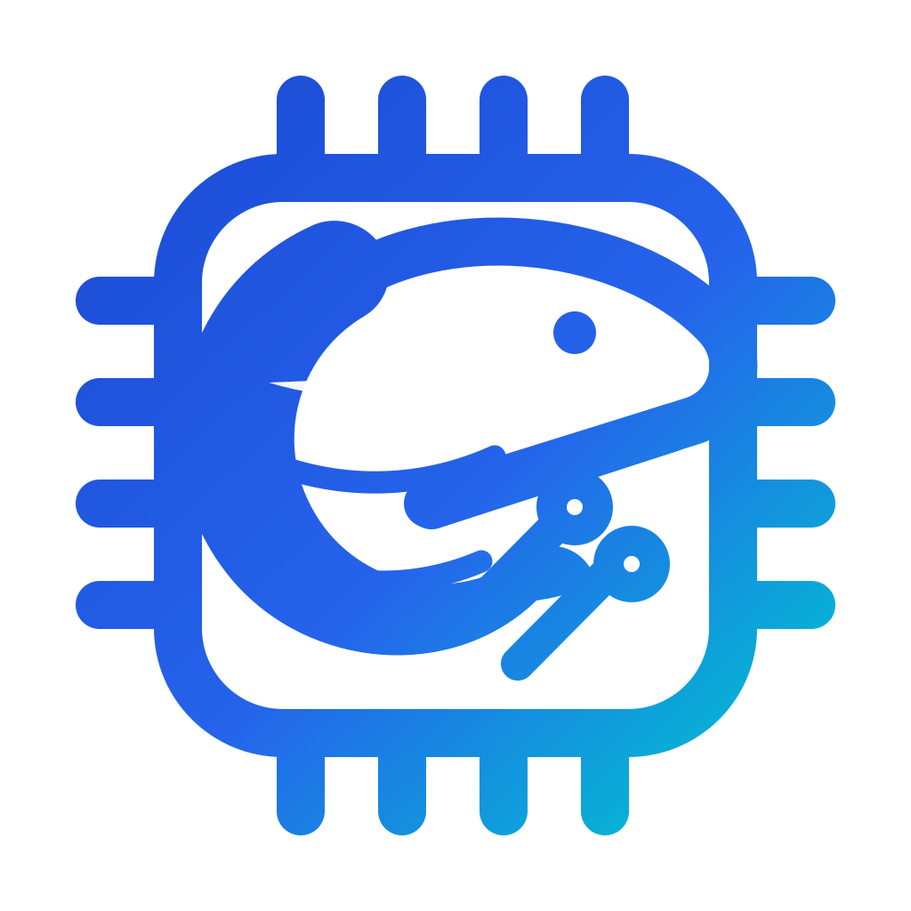
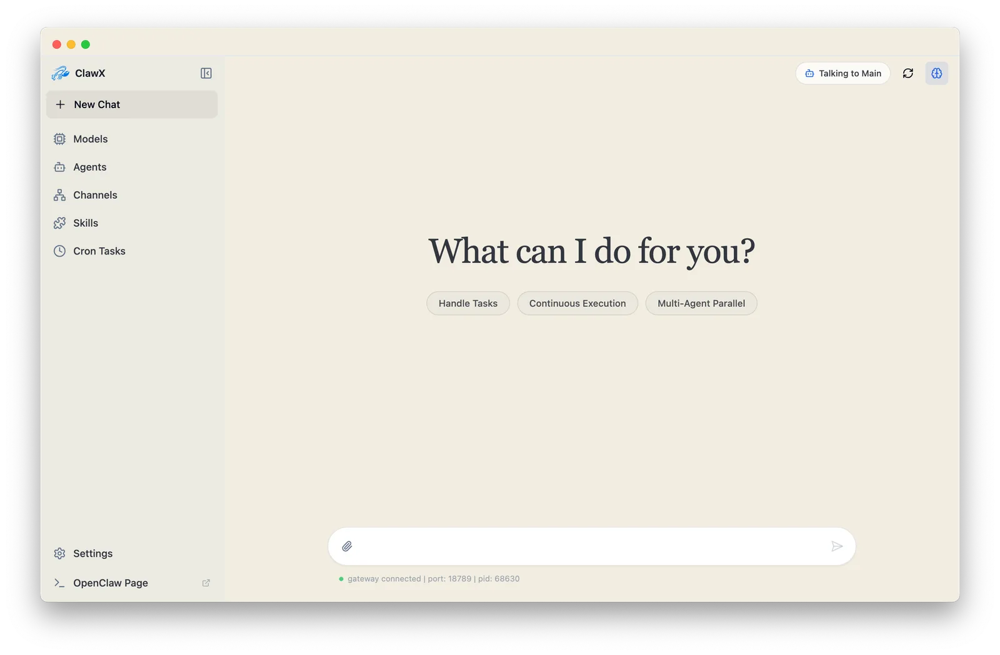
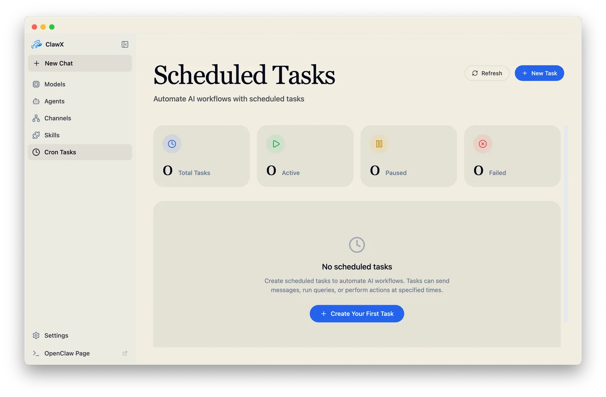
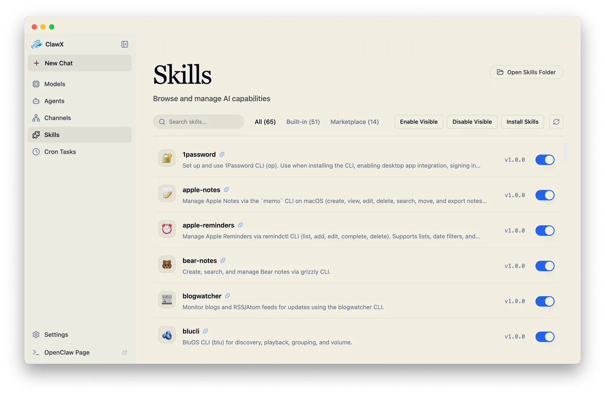
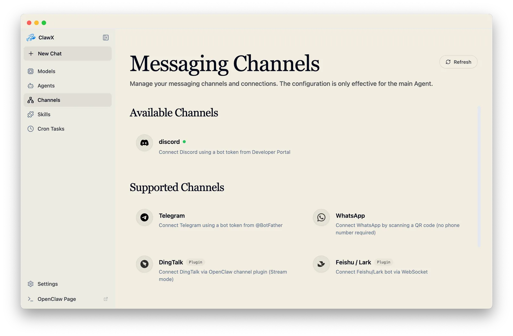
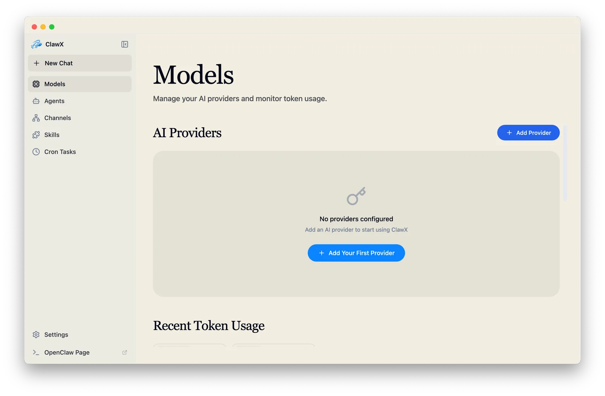

Chat with agents directly
Use a modern chat surface with Markdown, math, agent routing, and isolated workspaces.

ClawX Download
OpenClaw agents, without terminal overhead
ClawX turns OpenClaw into a polished control plane for providers, skills, messaging channels, scheduled jobs, and local model workflows. Keep the runtime close. Make the interface humane.
ClawX keeps OpenClaw's power intact while replacing scattered config files and CLI context switching with clear workflows, validation, and durable UI state.
Use a modern chat surface with Markdown, math, agent routing, and isolated workspaces.
Create recurring jobs, delivery targets, and channel-specific notifications without editing JSON.
Browse bundled and discovered skills, inspect their source location, and keep the managed directory in sync.
Manage Telegram, WeChat, Discord, Slack-style workflows, and account bindings from one interface.
Configure providers, validate credentials, manage Ollama, import GGUF files, and run local inference.




The app handles the operational layer: process lifecycle, provider checks, channel wiring, runtime folders, transcript history, and first-run setup.
Pick language, connect a provider, choose skills, and verify the runtime before the first chat.
Use OpenAI, Anthropic, Google, Moonshot, Qwen, OpenRouter, custom endpoints, and local Ollama models.
Bind accounts, select defaults, and keep agent delivery paths visible instead of hidden in config.
Inspect gateway state, run OpenClaw Doctor, and keep advanced tools available without leaving the app.
ClawX uses Electron Store for local app state and native keychain storage for provider credentials. It proxies backend calls through the desktop host layer, so renderer code does not own transport policy.
Mac, Windows, Linux
Start from a release build, or clone the repository and run the Vite + Electron dev server locally.
No. ClawX is a desktop interface built on top of OpenClaw. It embeds and manages the runtime so users can operate agents through a GUI.
Yes for cloud model usage. ClawX helps configure providers and stores credentials in the native OS keychain. Local Ollama workflows are also supported.
Yes. The main flows are visual: setup, provider validation, chat, skills, channels, cron automation, and local model management.
Yes. The application is MIT-licensed and the source code is available on GitHub.